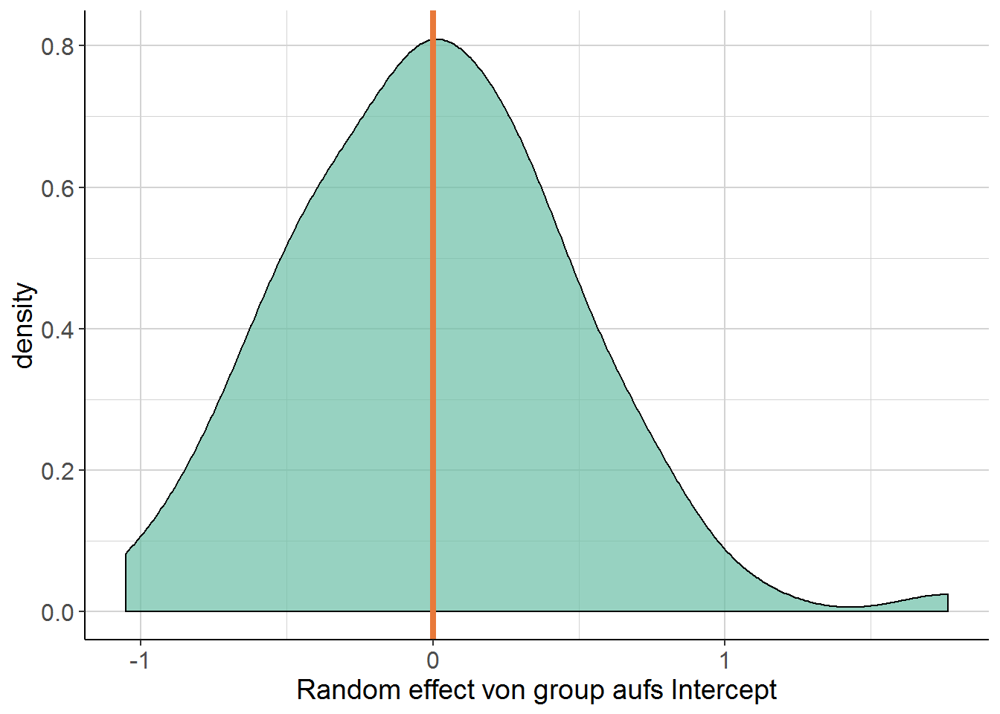
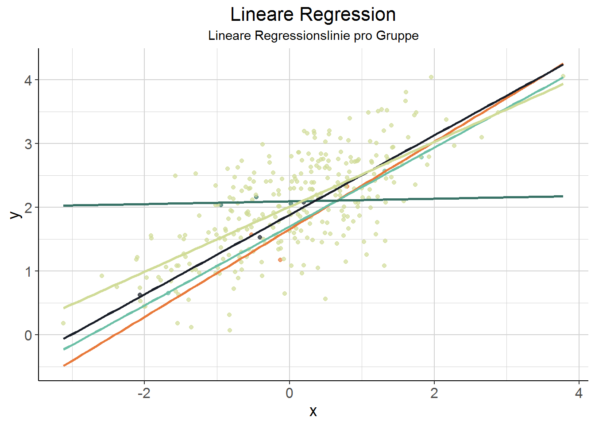
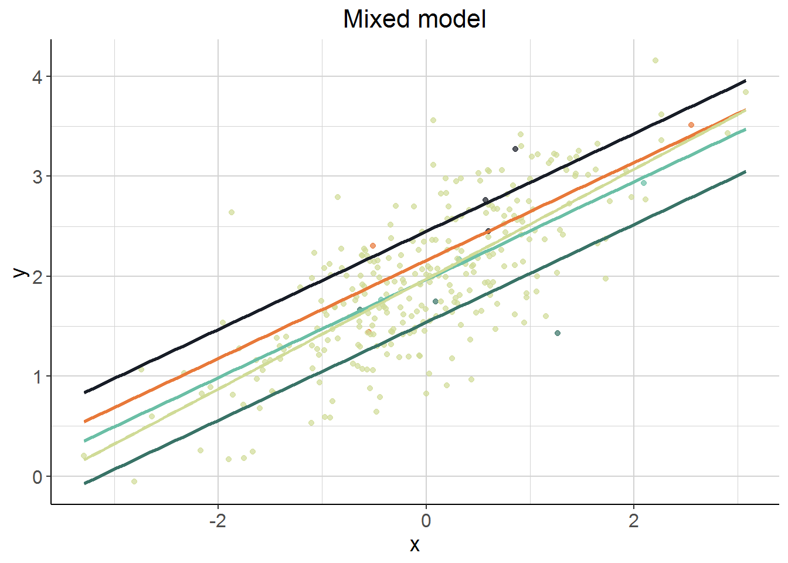

2.5 Simulationen
Zum besseren Verständnis: Rumspielen mit verschiedenen Parametern von simulierten Daten und das entsprechende Resultat im mixed model. In den Notes anstatt in den Übungen, weil echt hilfreich.
“In what follows we’ll change various aspects of the data, then rerun the model after each change […]. For each note specifically at least one thing that changed in the results.”
0. First calculate or simply eyeball the intraclass correlation coefficient:
\[\frac{\textrm{random effect variance}}{\textrm{residual + random effect variance}}\] In addition, create a density plot of the random effects.
2.5.1 Run 1
Which of the above represent the fixed and random effects?
x = fixed effect; u[groups] = random effect
## Linear mixed model fit by REML ['lmerMod']
## Formula: y ~ x + (1 | groups)
## Data: run1
##
## REML criterion at convergence: 244.4
##
## Scaled residuals:
## Min 1Q Median 3Q Max
## -3.02937 -0.57172 0.00258 0.53754 2.32268
##
## Random effects:
## Groups Name Variance Std.Dev.
## groups (Intercept) 0.18976 0.4356
## Residual 0.05813 0.2411
## Number of obs: 300, groups: groups, 100
##
## Fixed effects:
## Estimate Std. Error t value
## (Intercept) 1.97195 0.04573 43.12
## x 0.48974 0.01677 29.20
##
## Correlation of Fixed Effects:
## (Intr)
## x 0.006Summary: Okay, krass. Der residual standard error hat eine SD von .25, wie auch dem error term e in der Simulation zugewiesen wurde. x wird - wie spezifiziert - auf .5 geschätzt. Und das intercept - passt auch - auf 1.9. Das intercept der groups hat eine SD von .48 - wie zuvor in u übergeben. Bin noch nicht vollkommen sicher, wie ich die aufgeklärte Varianz beurteilen soll.
Vergleiche broom-Output:
Intraclass correlation: Groups klären \(76.55\) \(\%\) der Gesamtvarianz auf.
2.5.1.1 Density plot
Orange ist der Mittelwert, der 0 ist. Spannend aber, wie asymmetrisch das ist. 
2.5.1.2 Noch mehr Plots
Problem beim Plotten: Das sind 100 3er-Grüppchen. Es ist nicht so sinnvoll, den Plot danach zu gruppieren. Daher hier mal vier rausgegriffen und der Rest zusammengefasst. Jede Gruppe hat eine lineare Regressionslinie bekommen.

Interessanterweise sieht es hier so aus, als wäre auch ein random slope pro Gruppe angemessen. Mal zum Vergleich die Schätzungen des linearen Modells:

D.h. wenn man jede Gruppe für sich linear schätzt (was geom_smooth mit method = "lm" hier ja tut), ergibt sich ein anderes Bild als durch das mixed model. Wir wissen ja durch die Simulation, dass es keine random slopes pro Gruppe gibt (vermutlich würde auch das lineare Modell ähnliche Schätzungen liefern, wenn es nicht nur drei Datenpunkte pro Gruppe wären). Schon krass irgendwo, dass ein mixed Model viel mehr ist (sein kann?) als einfach nur ein lineares Modell pro Gruppe. Man beachte, dass die zusammengefasste Schätzung für die restlichen Gruppen einen anderen Slope hat, weil hier die unterschiedlichen Intercepts (minus die der gehighlighteten Gruppen) alle aufeinander prallen.
TO DO: Hier noch mal zurückkommen, wenn random slopes dazu kommen und schauen, ob die Ergebnisse von linearen Schätzungen pro Gruppe (Plot 1) und einem mixed model mit random slopes (allein und mit random intercepts?) sich unterscheiden!
2.5.2 Run 2
1. Change the random effect variance/sd and/or the residual variance/sd and note your new estimate of the ICC, and plot the random effect as before.